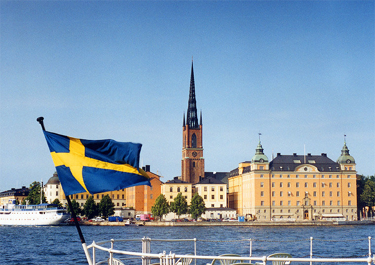
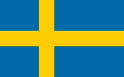
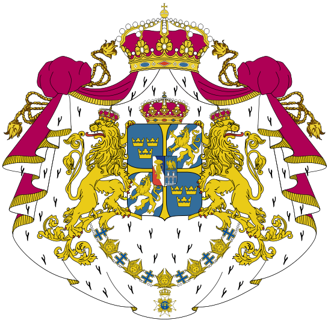
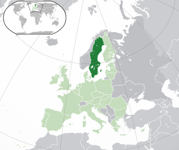
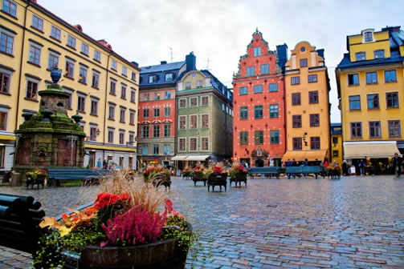
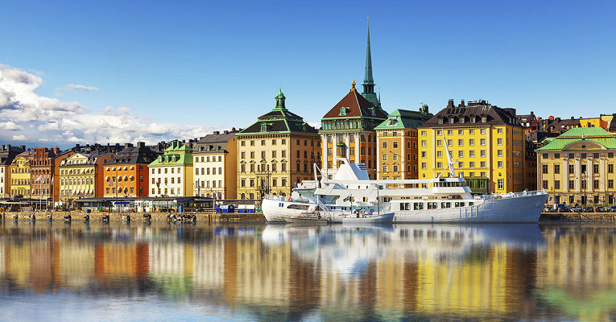
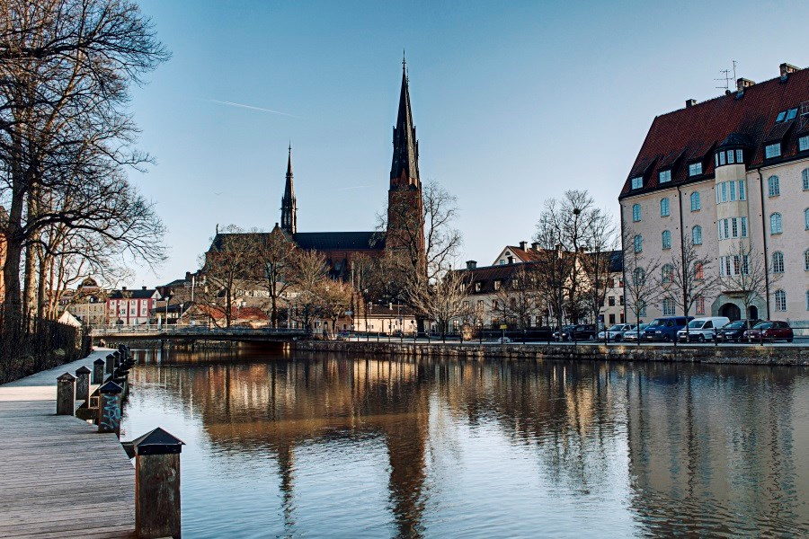
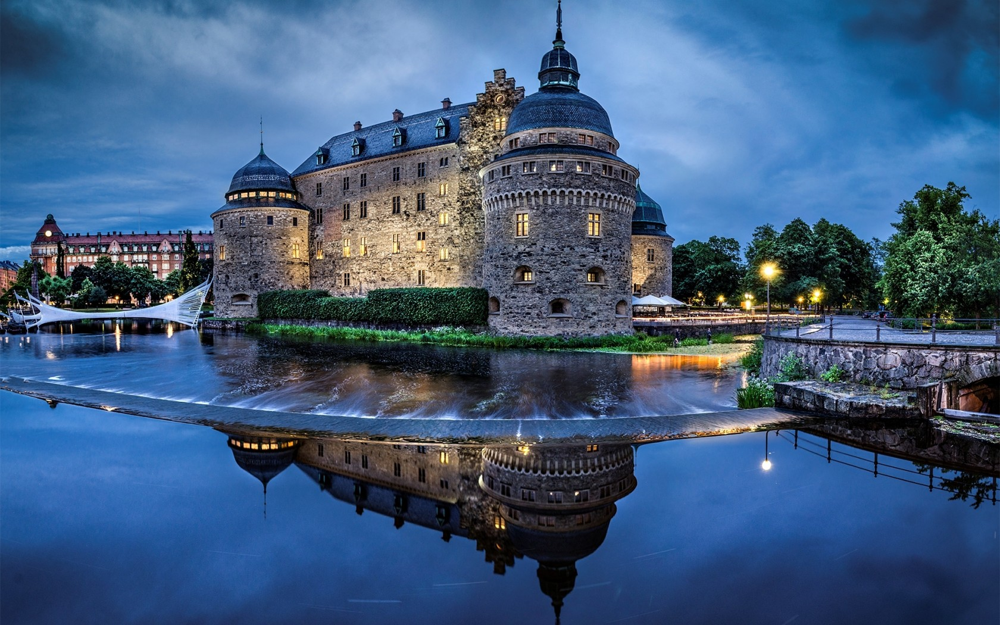

Швеция – это государство в Скандинавии, география которого включает тысячи прибрежных островов и внутриматериковых озер, таежные леса и горы, покрытые ледниками. Все крупнейшие города – столица Стокгольм и расположенные на юго-востоке Гётеборг и Мальмё – являются приморскими. Стокгольм занимает 14 островов с более чем 50 мостами. Он известен средневековым районом Гамла-Стан (Старый город), а также королевскими дворцами и музеями, в числе которых музей под открытым небом Скансен. |
 |
Краткая характеристика Швеции | |
| Флаг Швеции |  |
| Герб Швеции |  |
| Расположение Швеции |  |
| Столица Швеции | Стокольгом |
| Крупные города Швеции | Стокольгом, Гётеборг, Мальмё, Уппсала |
| Дата основания | 1397 |
| Официальный язык | Шведский |
| Население | 10 171 524 человек |
| ВВП на душу населения | 40 418 долларов |
| Валюта | Шведская крона |
| Форма правления | Конституционная монархия |
|  |  |
|  |  |